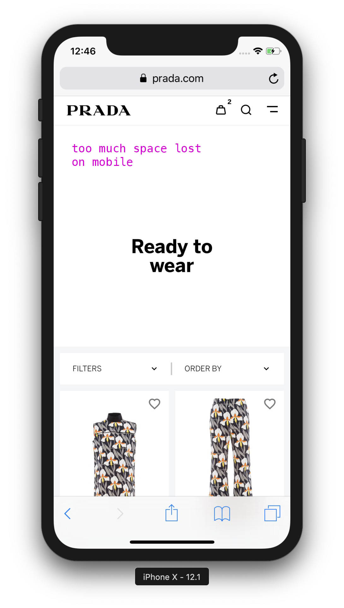
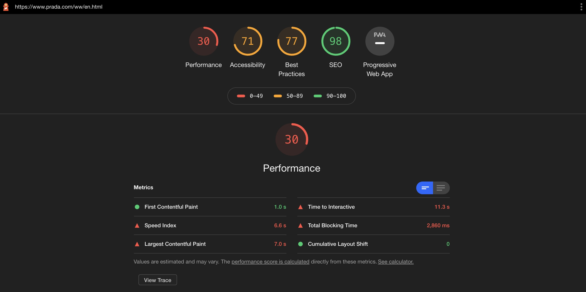

Blog posts
fashionweb review: PRADA.com
prada.com: a baby website for a century old brand
Our website review series will commence with reviewing Prada.com. The luxury fashion brand has been amongst the big brands who have been lagging behind with their digital transformation: they started selling on Net-A-Porter/Mr Porter in 2016, and they only entered e-commerce in China at the end of 2017. They are waking up to the realisation that people want to shop online.

A six-year-long awakening
When Prada’s CEO Patrizio Bertelli was asked in 2014 ‘why not e-commerce’, he responded that he has “more important things to do, like opening stores, for example.” It took the 74-year-old CEO two years before he admitted in a strange way in 2016 that “E-commerce was very American and now it’s moving also to Europe and very strongly in China.”
Three more years pass and in March 2019, Prada reported a 17.6 percent decline in net profits and posted a 10 percent fall in operating profit of €324M. Perhaps Patrizio Bertelli has been finally enlightened by now that shopping online is not something only Americans like doing and hopefully he understands the importance of expanding into e-commerce.
It seems like over these years he got the memo, since Prada has redesigned their website at the end of 2019 and promised to roll out their new e-commerce platform to more markets by 2020. Let’s dig deeper into their website here on fashionweb.io
Web Design:
➕ Sleek luxury feel, the usual white/grey/black color palette is being used *yawn*, just like 99% of all other luxury e-commerce brands. No revolutionary design, but that is completely fine - it’s ok to put more creativity into campaigns and products which are accurately displayed on the website.
UX/UI:
➖ Mobile navigation feels too slow and sometimes flickering. You have to tap and make multiple selections in order to view a product. For example when I wanted to check their new mini bags, it took me 4 taps to get there where the mobile navigation was slow to respond to my taps. Feels like my time is being wasted as I am tapping many times to finally look at what I was looking for.
➖ When I searched for “mini bags”, I didn’t get the mini bag that I was looking for listed as a search result. Again, my time is being wasted and I might not buy this bag if I am in a hurry.

➖ A lot of space is lost on mobile on certain Categories pages [Product Listing Pages, like Bags].

Product photography:
➕ High quality product images, it’s clear to see what I am buying.
➖ Product photography could be improved and be more creative that communicates the Prada brand.
➖ Certain pages on mobile have too low-res images which was overlooked by the luxury brand. Most people who shop for luxury items have the best and most expensive devices with high-res displays. A low-res image makes everything look cheap.
Speed
➖ Perceived loading time feels ok. When looking at Lighthouse tests, there is a lot to improve in their javascript stack as it’s slowing down the site considerably. Friendly reminder: Speed if important and it has a large, measurable effect on conversion rates. In fact it is so important that it will deserve a specific fashionweb.io article.
➖ Long and ugly URLs that impact SEO negatively. They need to use canonicalisation. https://www.prada.com/gb/en/men/shoes/sneakers/products.prax_01_leather_and_technical_fabric_slip-on_sneakers.4D3480_3KYU_F0002_F_G000.html
Checkout
➕ Kudos for having a single page checkout, a customer can have a quick glance at the entire checkout, not having to go through them step-by-step.
➖ Unable to preview the Payment methods in the Checkout... Why not? ü§î
REVIEW TIME
LOOK AND FEEL: üëúüëúüëú [3 out of 5 handbags]
Nothing revolutionary, actually it's even boring but that’s fine. They are following best practices most of the time. Usual black/white/grey colour palette is used, just like all the other fashion brands.
WEB PERFORMANCE: üëúüëúüëú [3 out of 5 handbags]
Advice: good to look at webspeed stats and work on those numbers. Your conversion will thank you for it.
ALL IN ALL: üëúüëúüëúüëú [4 out of 5 handbags]
We are seeing a good trend from PRADA.com as they have finally realised how important their e-commerce is and investing more into this precious field. Well done, keep going! Or else you will be quickly left behind...
Date: 2020. july 21.
You think Fashion E-commerce is big? Well, it's just the beginning.
With Covid-19, Microsoft bragged about Teams user acquisition being “2 years of digital transformation in 2 months”. Well, for fashion, it is rather an opportunity to catch up with 10 years of e-commerce being behind with other industries. But the exploration of this potential is still shy; a lot has happened with social media for customer acquisition, but little has been achieved when it comes to online products [products being websites--not clothes]. This blog is dedicated to this fun quest.
A lot has happened in the past few months. We are in the middle of a pandemic that is shutting down retail stores and making people turn more and faster to e-commerce websites to do their shopping online. Even before Covid-19 the e-commerce sector was predicted to steadily grow - as the world’s population is getting easy access to the internet - and due to the pandemic this growth is accelerating.
Companies helping you buy and sell clothes online like Shopify and Stripe are valued billions of $$$ and brands big and small are aware how important their online presence is. Also we have witnessed a lot of fast David vs. Goliath examples...
• Millennial favourite Off-White’s [founded in 2012] Virgil Abloh took over menswear creative direction at Louis Vuitton [founded 1854].
• SSENSE which has a 100 developers employed in Montreal, Canada who solely work on their website utilising the latest javascript frameworks [Vue.js] impacting site-speed and perceived loading time is a favourite fashion destination for all the cool kids who have cash to burn. They made the decision to heavily invest in their tech -- and this has payed off.
• “New” in the game [not that new] marketplaces like Farfetch and Tmall carving out a big share of sales while fashion retailers relying on traditional wholesale suffering sales year on year.
And people like your old classmate from primary school are able to cash in as influencers just by posing in very short jeans shorts with some branded ice-tea that they are trying to sell to you, as we spend more time scrolling through ads on social media.
But this is just the beginning, with China leading the way with e-commerce being barely at 25% [as pointed out by Benedict Evans], ahead of UK and South Korea; then between 5% and 15% for USA, France, Japan and Germany; then not even 5% for Russia, Brazil, India and the rest of the world.

Luxury fashion brands have been historically behind with digital innovation.
• Celine launched their first e-commerce site in 2017 [yep. 3 years!!! ago]. Before that they just had the lookbooks available to look at online. A habit that took a long time to shake for old french fashion houses.
• Chanel still doesn’t sell it’s ready-to-wear and accessories online. They only sell make-up. They are one of the only big giants still without a proper e-commerce website. They have lookbooks and product pages with prices [for certain expensive items you need to even request the price] but the ADD TO BAG button is missing everywhere.
• Givenchy didn’t have an e-commerce website until 2013 - when they outsourced it to then Net-A-Porter [now YOOX] to build it for them and where the Net-A-Porter credits showed up in Givenchy’s footer. YIKES. This is from a historic french fashion house owned by LVMH, a company that surely should have hired more people in their e-commerce team and launched their own website.
It’s 2020. Many of these big names have been slow and very late to the game. Now people want to avoid physical contact and want to order everything online.
The 15% year-on-year growth in e-commerce with a 1.2B consumer basis is just the beginning [2018-2022 Statista data]. And at the same time, retail stores are disappearing [according to Shopify, “last year, more than 1,875 fashion retailers shut down and this year, projections reported by WWD place the number at just under 10,000...” and it was estimated before Covid-19!]. However all fashion houses slowly started to understand what is understood as prehistoric knowledge in the tech industry: that site-speed affects conversion rate, that good UX will most likely enable your customer to purchase that $30k bag, and that perhaps it’s time to switch to a more suitable platform and refactor the codebase in order to load those product pages faster... otherwise, either they risk losing sales to a marketplace, where customers shop from the same inventory but on a much better functioning website, or, let’s face it, to lose their customers at all against some tailored-for-instagram newcomers.
What is even dumber, is the comparative costs of e-commerce vs. retail stores: Nike’s venue on the Champs-Élysées costs €613M, a lease on the 5th Avenue is $2,250/squarefoot, right behind $2,2745 on Hong Kong’s Causeway Bay. As prestigious as these stores seem at their expensive locations, they represent a few points in the brands’ revenue structure, probably only a decimal. While brands are spending money on a lease and fancy painting, they keep their e-commerce team headcount to the bare minimum: interns managing the platform even if it already brings 10-50% of the revenue stream... or during a pandemic shutdown this revenue jumps to 100%. And if you say such venues are important in terms of brand image and marketing, well... what would you say about a well-functioning website? Why is there such a discrepancy in efforts between retail and e-commerce, if it’s not by ignorance?

This post is an introduction, it is not meant to dig in a specific topic. But as you are here already, let me tell you my first principle: Forget fancy UI.
Creative web designs are becoming less common as the web is moving closer to a shared design language and best practices are being freely shared by the amazing web dev community: which one hand makes websites look more homogeneous while on the other hand enforces more good UX. The latest design trend is to have no design at all, as this great article points out: GOOD UX = BORING UI.
One big reason behind this principle is that: You are not the user.
According to this research computer literacy is very low amongst the population “across 33 rich countries, only 5% of the population has high computer-related abilities, and only a third of people can complete medium-complexity tasks.” While it may be easy for you to buy your weekly groceries online, a lot of other people have trouble using a computer, the internet and technology in general. Which is totally fine. We just need to make sure we make shopping easy for everyone on the web.
Resources, articles and how-tos on webdev and e-commerce can be found in abundance online since the webdev community shares freely best practices, code snippets and learnings from previous projects while working at Big Tech companies or startups however when you look at the fashion industry and it’s digital sector, not much has been said or shared. fashionweb.io is a place to stay up-to-date on all things digital in the fashion industry: creative or not-so-creative web designs, good and bad UX, new tech to use to achieve fast site-speed, best and worst practices or just check out some new fashion websites for inspiration for those who want to launch their new e-commerce site in fashion.
Hello world!
Date: 2020. july 13.